Mainshaft Assembly Clearance Inspection
Mainshaft Assembly Clearance InspectionNOTE: If replacement is required, always replace the synchro sleeve and synchro hub as a set.
1. Support the bearing inner race with an appropriate sized socket (A), and push down on the mainshaft (B).
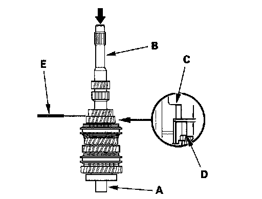
2. Measure clearance between 2nd gear (C) and 3rd gear (D) with a feeler gauge (E).
^ If the clearance is more than the service limit, go to step 3.
^ If the clearance is within the service limit, go to step 4.
Standard: 0.06 - 0.16 mm (0.002 - 0.006 in.)
Service Limit: 0.25 mm (0.010 in.)
3. Measure thickness of 3rd gear.
^ If the thickness is less than the service limit, replace 3rd gear.
^ If the thickness is within the service limit, replace the 3rd/4th synchro hub and 3rd/4th synchro sleeve as a set.
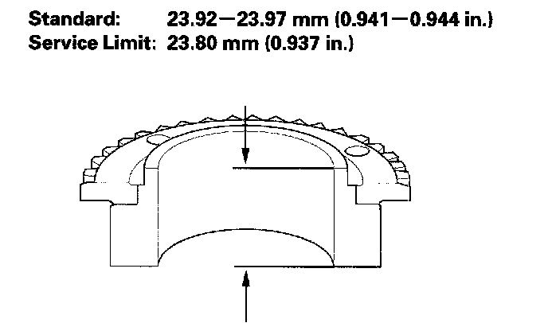
4. Measure clearance between 4th gear (A) and the distance collar (B) with a dial indicator (C). If the clearance is more than the service limit, go to step 5.
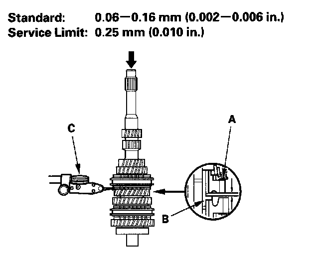
5. Measure length of the distance collar as shown.
^ If the length is not within the standard, replace the distance collar.
^ If the length is within the standard, go to step 6.
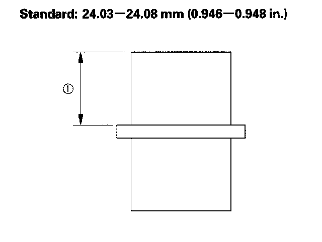
6. Measure thickness of 4th gear.
^ If the thickness is less than the service limit, replace 4th gear.
^ If the thickness is within the service limit, replace the 3rd/4th synchro hub and 3rd/4th synchro sleeve as a set.
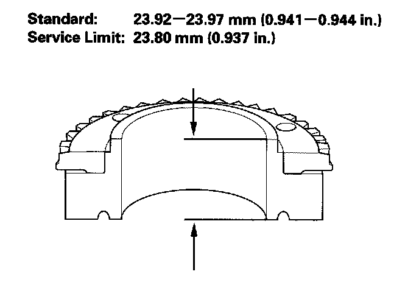
7. Measure clearance between the distance collar (A) and 5th gear (B) with a dial indicator (C). If the clearance is more than the service limit, go to step 8.
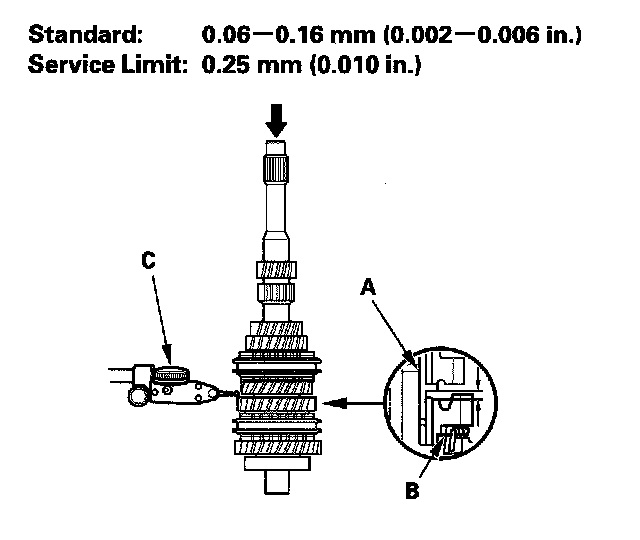
8. Measure length (2) of the distance collar as shown.
^ If the length (2) is not within the standard, replace the distance collar.
^ If the length (2) is within the standard, go to step 9.
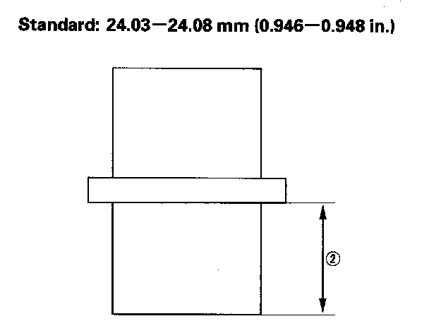
9. Measure thickness of 5th gear.
^ If the thickness is less than the service limit, replace 5th gear.
^ If the thickness is within the service limit, replace the 5th/6th synchro hub and 5th/6th synchro sleeve as a set.
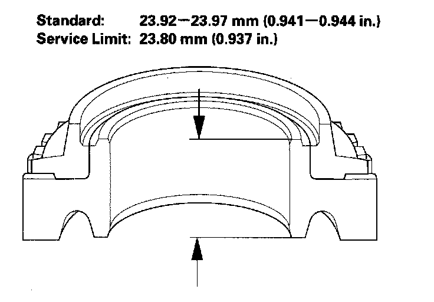
10. Measure clearance between 6th gear (A) and the angular ball bearing (B) with a feeler gauge (C). If the clearance is more than the service limit, go to step 11.
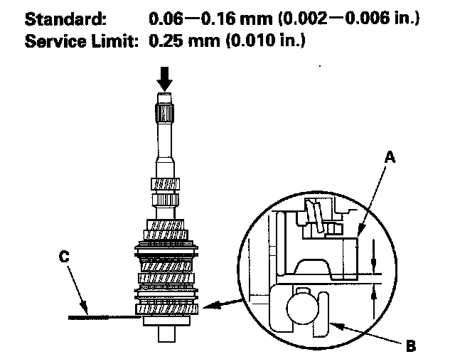
11. Measure length of the 6th gear distance collar.
^ If the length is not within the standard, replace the 6th gear distance collar.
^ If the length is within the standard, go to step 12.
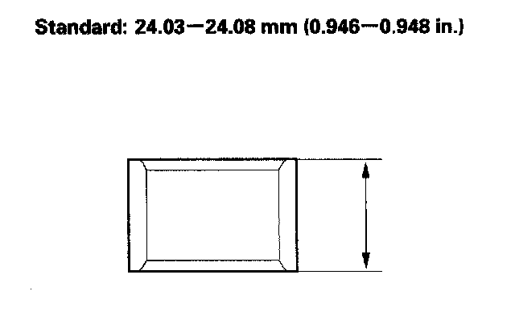
12. Measure thickness of 6th gear.
^ If the thickness is less than the service limit, replace 6th gear.
^ If the thickness is within the service limit, replace the 5th/6th synchro hub and 5th/6th synchro sleeve as a set.
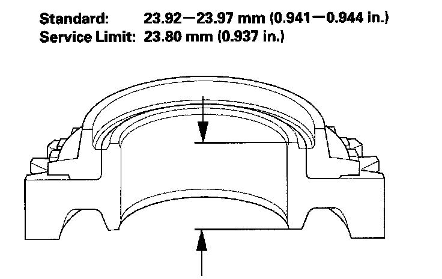